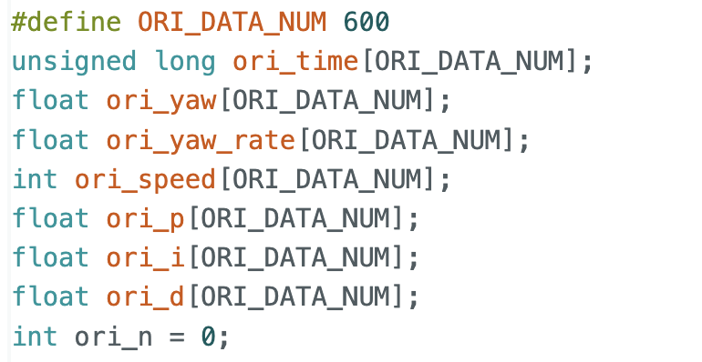

Prelab
In this part, I followed a similar approach to the previous PID control lab. I again used arrays to store the relevant orientation state data for easier observation and post-processing.

For data transmission, I also used a similar strategy as before. The Python side sends the PID parameters and target angle to configure the controller.
Lab Tasks
Implementation
In this part, I used the gyroscope yaw angle to estimate the robot’s orientation. Following the lab guidance, I used the DMP to measure the rotation angle. The initialization and main data collection process are shown in the code.
To improve control accuracy, I kept the robot still for a short time at the beginning of the program to collect data for calibration. By subtracting this bias during later computation, the orientation estimate became more accurate.
Using the DMP output, I obtained the current angle of the robot. The error was then used to compute the proportional term and accumulate the integral term. For the derivative term, instead of differentiating the angle, I directly used the gyroscope reading. This provides angular velocity directly and avoids additional noise caused by numerical differentiation. I also applied integral wind-up protection by clamping the integral term within a fixed range. In addition, I set both minimum and maximum motor speeds, since spinning in place usually requires a larger PWM output than straight motion.
PID discussion
I tried many combinations of PID parameters. In this lab, I used a relatively large proportional gain because orientation correction requires the robot to spin, which needs a stronger control output. I wanted the robot to respond quickly when the initial error was large or when disturbances. Since I already limited the maximum and minimum motor speed, I believe this choice helped the robot reach the target angle faster. After that, I further tuned the integral and derivative terms to achieve more stable and accurate control.
Unlike the previous lab, this PID controller needed to run while still receiving BLE commands. To achieve this, I introduced several flags to control whether PID should start and whether initialization had been completed. In this way, the main loop only needed to update the PID controller continuously, while still allowing the Arduino to process incoming BLE commands from the computer.
I also included the PID control code, the data transmission code, and the corresponding command-case implementation. A flag was used to determine whether the parameters had been initialized successfully and whether the command had been received correctly. After that, the PID controller could be updated continuously in the main loop.
Multi-Direction Control
Because the PID update was executed in the main loop, the robot could receive BLE commands in real time. This allowed me to send different commands to change the target angle, so the robot could rotate from its current orientation to a new desired direction.
Sampling Time
After testing, I measured the sampling rate of this implementation to be about 57 Hz. Since the loop now had to handle more tasks and also receive BLE messages, the update rate became slower than the blocking implementation used in the previous lab, where the control loop ran directly inside the command case. However, from the experimental results, this update rate was still responsive enough for orientation control.
Wind-Up Protection
Integral wind-up protection was implemented in the controller. In practice, because the proportional gain was relatively large, the robot usually reached the target quickly, so the integral term did not accumulate significantly. Still, I kept the wind-up protection in the implementation as a good habit.
Discussion
In this lab, I implemented PID control for robot orientation. I think that both straight motion and rotational motion can involve relatively high speed, which may place stricter requirements on future experiments. More sensor fusion may also be needed later.
In the previous lab, by adjusting the ToF settings in setup, I achieved a sampling rate of about 40 Hz for the ToF sensor. Combined with the results of this lab, I believe a control frequency around 50 Hz is already a reasonable and sufficiently responsive range. In future experiments, additional code and more data storage may further reduce the loop speed, which is an important factor to consider. A practical question for later work is what sampling rate is sufficiently safe and responsive when the robot is moving at higher speed and needs real-time feedback.